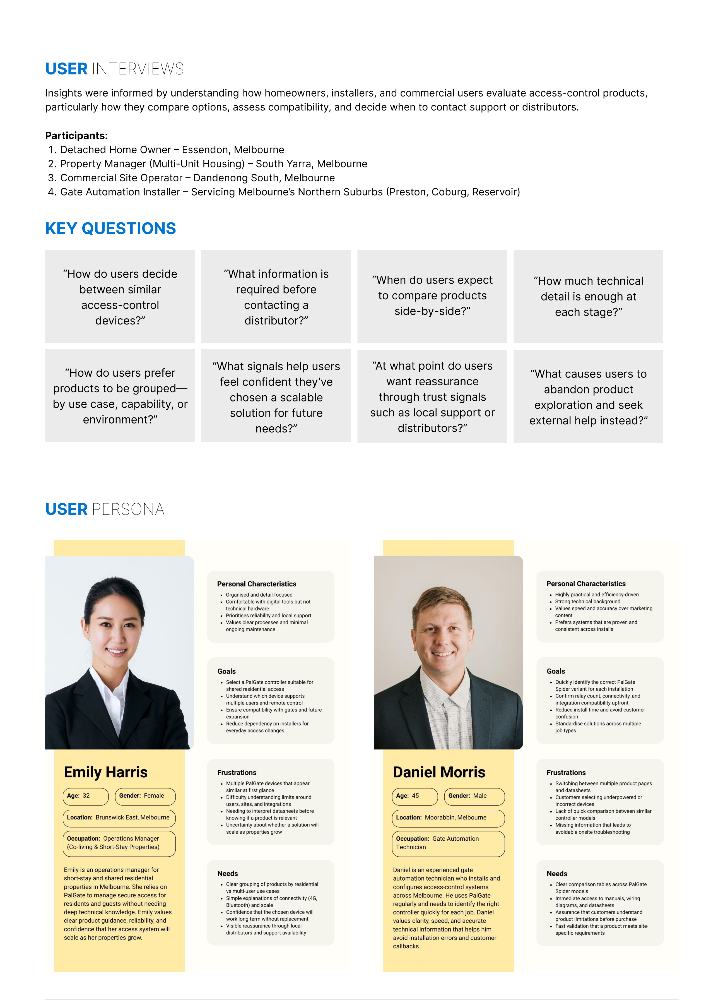
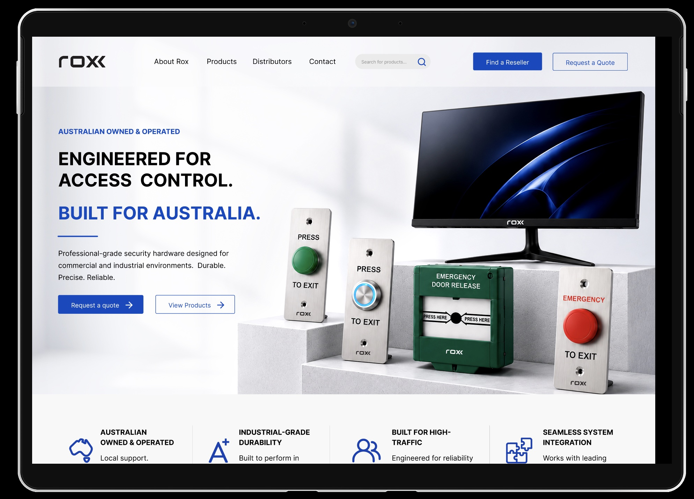

Explain the offer quickly
Make the access-control focus and commercial context clear from the opening screen.
Digital experience Melbourne, Australia
A clean website experience for ROX, presenting access-control hardware with a confident blue and white visual language.

INTERACTIVE PROTOTYPE
Explore the interactive ROX website prototype in Figma.
WEBSITE DESIGN CASE STUDY
ROX — A clear product-led experience for professional access-control hardware.
01 / PROJECT OVERVIEW
The ROX website presents professional-grade security hardware for commercial and industrial environments. The design brings products, brand positioning, and enquiry paths into one clear experience, using a confident blue-and-white visual system and prominent hardware imagery.
The landing page introduces ROX as Australian owned and operated, with a focus on durability, high-traffic environments, and system integration. Product browsing, reseller discovery, and quote requests give professional visitors different routes to a useful next step.
02 / THE CHALLENGE
The design challenge is to present a professional hardware range without making the first interaction feel like a dense technical catalogue. Visitors need to understand what ROX offers, recognise its relevance to their project, and find a clear route to product information or a supplier.
Make the access-control focus and commercial context clear from the opening screen.
Give exit buttons, emergency door-release products, and other devices enough visual space to be recognised.
Provide separate paths for product exploration, reseller discovery, and project enquiries.
03 / DESIGN APPROACH
The approach pairs a direct brand statement with large, detailed product imagery. A restrained navigation bar keeps the main destinations visible, while a product search offers a direct entry point for visitors who already know what they need.
Solid blue buttons distinguish priority actions from outlined alternatives. The hero pairs “Request a quote” with “View Products,” while “Find a Reseller” remains prominent in the header. This supports both exploratory browsing and visitors ready to act.
A supporting strip introduces local ownership and support, industrial-grade durability, reliability in high-traffic environments, and integration. These messages give the product imagery a practical context.
Product storytelling · Brand application · Page hierarchy · Search visibility · Calls to action · Responsive layouts
04 / WHO IT SERVES
The audience profiles below frame the needs of the professional visitors addressed by the design.

Professionals identifying hardware for an access-control installation or an existing system.
Visible product navigation and search, recognisable hardware photography, and a direct reseller action support a focused visit.
Buyers exploring products for commercial or industrial sites and planning a project enquiry.
A concise value proposition, practical product imagery, supporting brand messages, and a prominent quote action guide the introduction.
05 / KEY FEATURES
About ROX, Products, Distributors, and Contact provide a concise set of familiar destinations.
Search sits alongside the navigation for visitors looking for a specific device or product term.
Large hardware visuals give the range an immediate presence and connect the brand message to physical products.
“Request a Quote” appears in the header and hero so project enquiries are easy to locate.
A prominent “Find a Reseller” action provides a route for visitors ready to contact a supplier.
Local support, durability, high-traffic use, and integration give visitors a concise overview of the design’s product positioning.
06 / USER JOURNEY
The opening screen supports three clear intentions. Visitors can learn what ROX offers, explore the product range, or move directly towards a reseller or quote enquiry.
The headline and hardware imagery introduce access control for Australian commercial and industrial environments.
Products, search, and “View Products” provide entry points into the range.
Supporting messages introduce the design’s focus on durability, local support, high-traffic use, and integration.
“Find a Reseller” and “Request a Quote” give visitors distinct routes to a supplier or project conversation.
07 / VISUAL SYSTEM
Blue highlights actions and key messaging. White and light neutral backgrounds create space around the products, while dark text anchors the hierarchy.
Bold sans-serif headlines establish the main message. Smaller supporting text and generous spacing give the page a clear reading order.
Detailed hardware photography places the products on stepped platforms, making their finish, form, and purpose central to the composition.
Filled and outlined button treatments distinguish actions while maintaining consistent spacing, alignment, and visual language.
08 / VISUAL DESIGN
The landing page pairs its Australian positioning with a direct introduction to the hardware. The hero keeps the main message and actions separate from the product composition, giving both room to read.

09 / DESIGN OUTCOME
The design brings brand messaging, product visibility, and enquiry routes together in one opening experience. Visitors can see the type of hardware offered and choose between browsing, finding a reseller, or requesting a quote.
Product clarity, confident branding, and straightforward enquiry paths for professional access-control buyers.